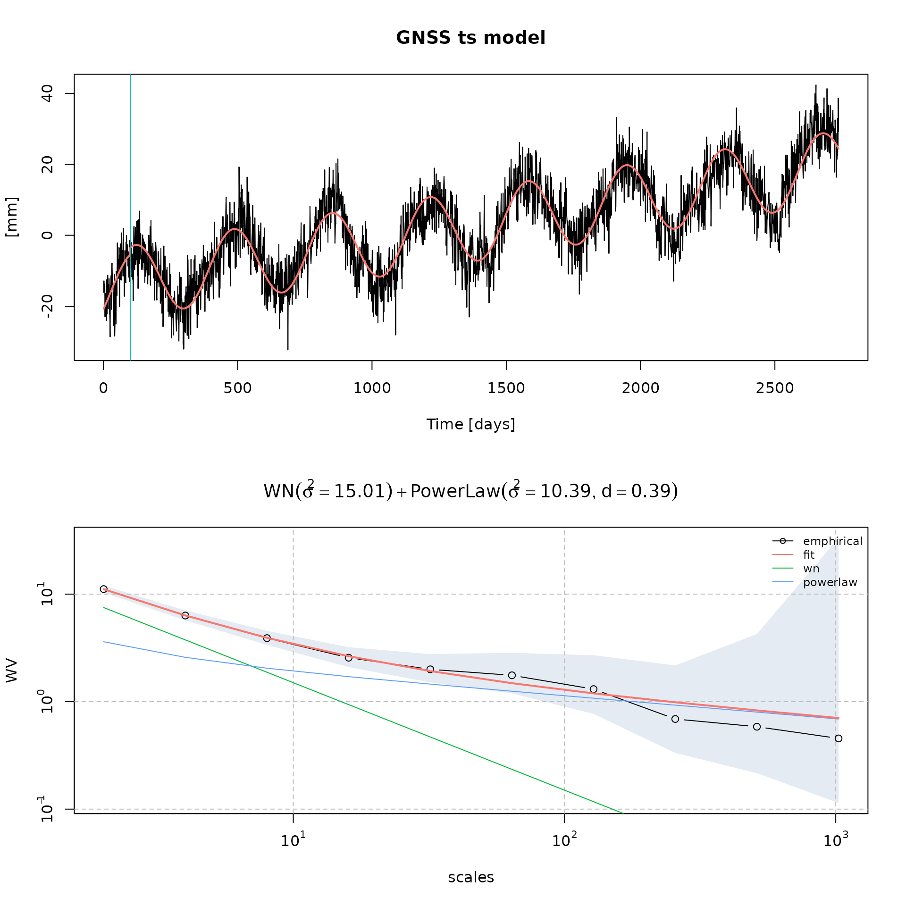
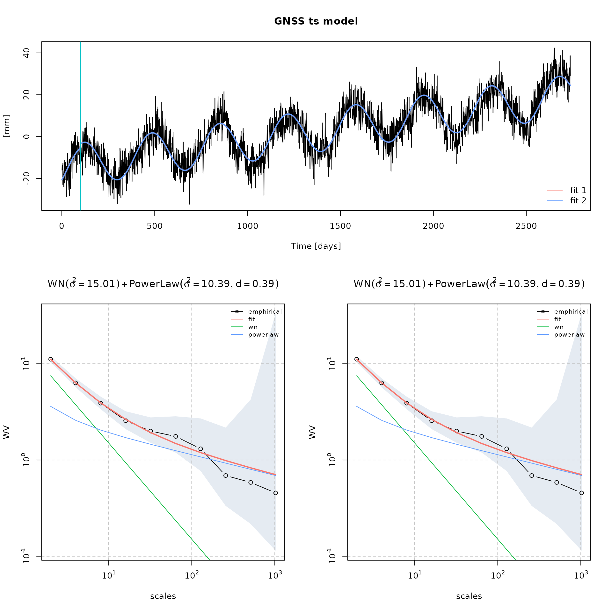
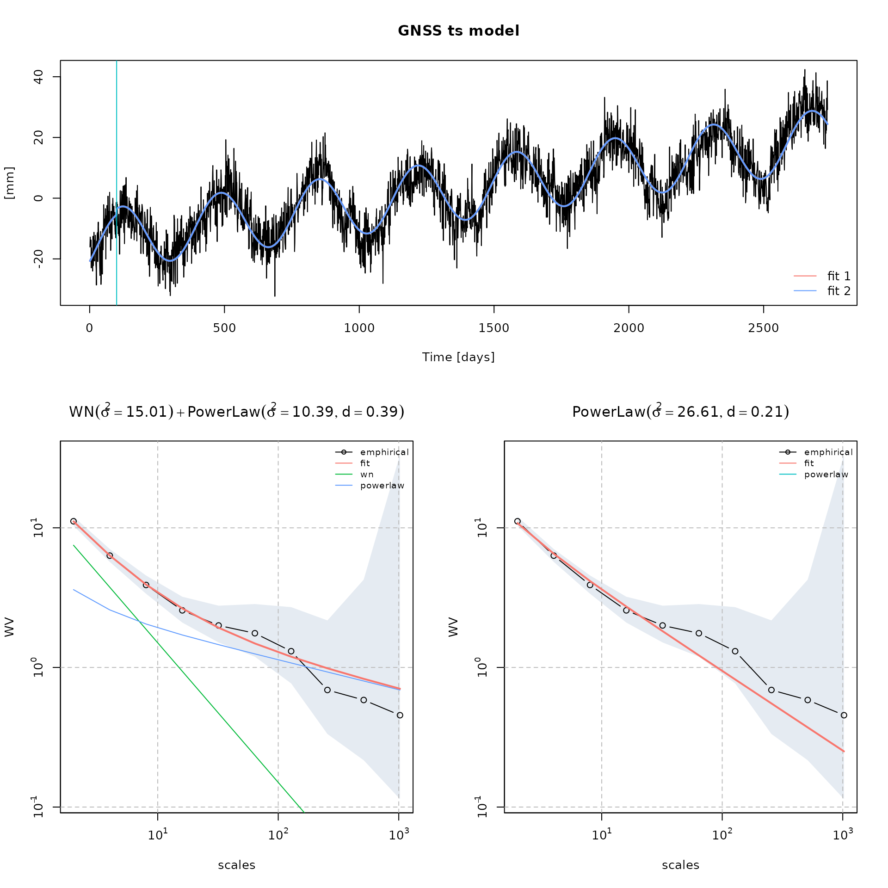
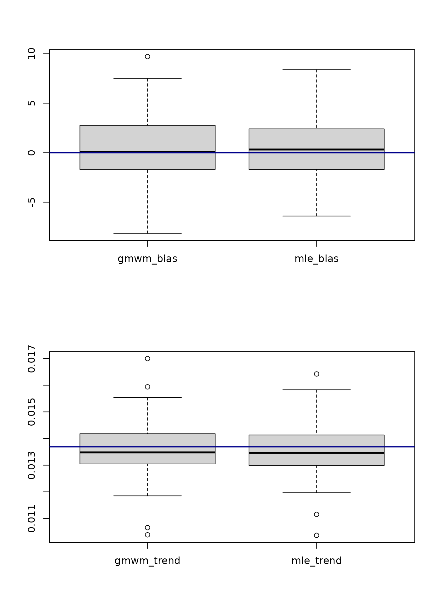
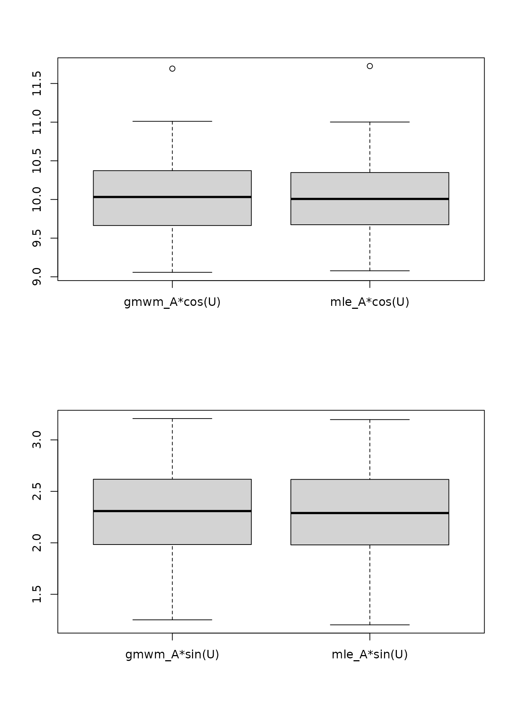
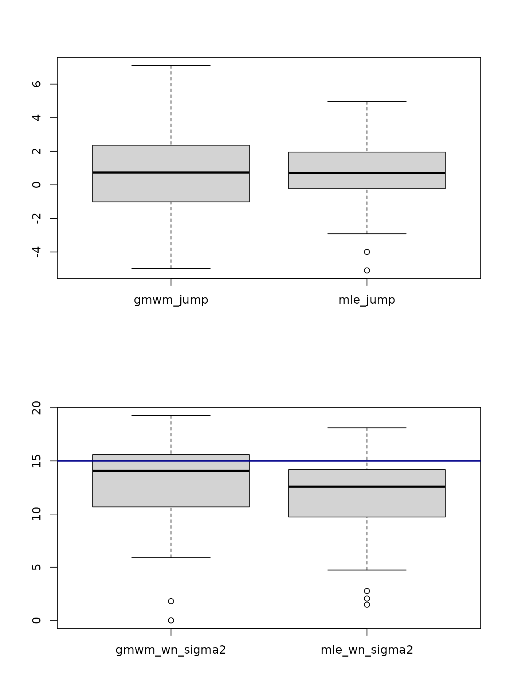
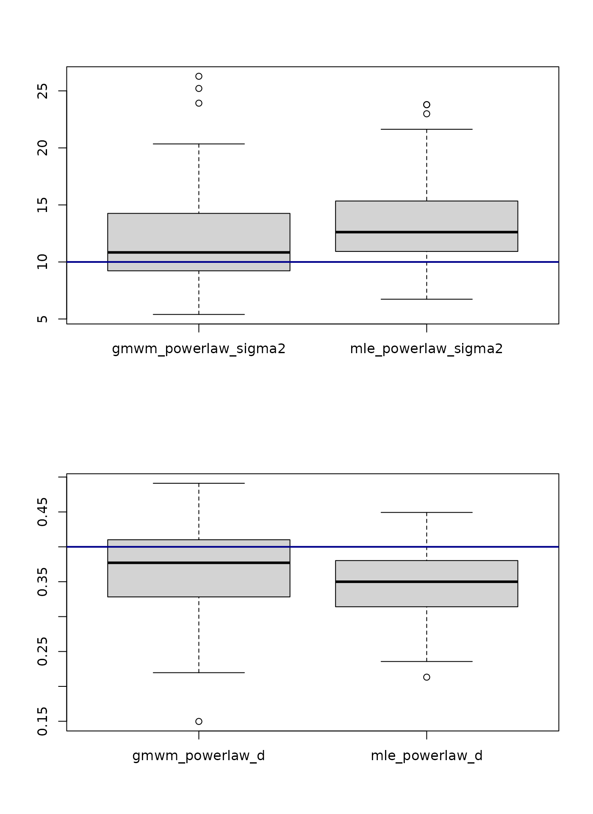

test.Rmd
library(flicker)
#> Loading required package: wv
#> Loading required package: simts
#>
#> Attaching package: 'simts'
#> The following object is masked from 'package:wv':
#>
#> unitConversion
#> Loading required package: longmemo
#> Loading required package: ltsa
#> Loading required package: pbapply
#> Loading required package: pbmcapply
#> Loading required package: parallel
#> Loading required package: stringi
#> Loading required package: rjson
#> Loading required package: robustbase
#> Registered S3 method overwritten by 'robustbase':
#> method from
#> print.lts simts
#> Loading required package: MASS
#>
#> Attaching package: 'MASS'
#> The following object is masked from 'package:simts':
#>
#> select
#> Loading required package: fs
# libraries
library(simts)
library(doParallel)
#> Loading required package: foreach
#> Loading required package: iterators
library(foreach)
library(flicker)
library(progress)
phase <- 0.45
amplitude <- 2.5
sigma2_wn <- 15
sigma2_powerlaw <- 10
d <- 0.4
bias <- 0
trend <- 5 / 365.25
cosU <- amplitude * cos(phase)
sinU <- amplitude * sin(phase)
# define time at which there are jumps
jump_vec <- c(100)
# define height of jumps
jump_height <- c(10)
theta_vec <- c(bias, trend, cosU, sinU, jump_height, sigma2_wn, sigma2_powerlaw, d)
nparam <- length(theta_vec)
# define beta
beta <- c(bias, trend, 10, cosU, sinU)Using functions implemented in simts, we generate realizations from the sum of a white noise and power law process.
model_i <- WN(sigma2 = sigma2_wn) + PLP(sigma2 = sigma2_powerlaw, d = d)
model_i
#>
#> Guess Starting Values: FALSE
#> Terms Initial.Values
#> WN 15.0
#> SIGMA2 10.0
#> d 0.4
#> The model will be initiated using the initial values you supplied.Let us consider a period of 7.5 years with daily observations:
n <- 7.5 * 365We fix a seed for reproducibility and create the X matrix encoding the shift in means of the time series and the sinusoidal signals.
seed_i <- 12345
set.seed(seed_i)We then generate residuals from the stochastic model
eps <- simts::gen_gts(model = model_i, n = n)We then artificially add some perturbations and data features data by adding location shifts, a deterministic vector (trend) and sinusoidal signals in the time series.
This is operation is performed with flicker::create_X_matrix().
X <- flicker::create_X_matrix(1:length(eps), jump_vec, n_seasonal = 1)We then create the estimated time series given the model definition in …
yy <- simts::gen_mean(X, beta) + epsWe write a file containing the index and value of the time series.
# save signal in temp
name_file = "/tmp/data_file.txt"
write.table(x = cbind(1:length(yy), yy), file = name_file, row.names = F, col.names = F)An estimation of the model can the be performed using the Maximum Likelihood Estimation (MLE) method implemented in Hector as such
# estimate model
fit_mle = run_one_gmwm_twosteps_base(file = "data_file.txt",
dir = "/tmp",
model = "wn+powerlaw", theta_0 = c(0.1,0.1,0.1),
n_seasonal = 1, jumps = jump_vec, robust = F, ci = T)
class(fit_mle)
#> [1] "gnsstsmodel"
fit_mle
#> GNSS time series model
#>
#> * Model:
#>
#> * Functional parameters:
#> bias : +0.62530438 +/- 2.729
#> trend : +0.01231374 +/- 0.001
#> A*cos(U) : +9.67776912 +/- 0.446
#> A*sin(U) : +2.74245617 +/- 0.459
#> jump : +1.96636041 +/- 2.223
#>
#> * Stochastc parameters:
#> wn_sigma2 : +15.01050090
#> powerlaw_sigma2 : +10.39375045
#> powerlaw_d : +0.39290736
#>
#> * Estimation time: 0.90 s
fit_regression_gmwm <- flicker::run_one_gmwm_twosteps_base(
file = "data_file.txt",
dir = "/tmp",
model = "wn+powerlaw", theta_0 = c(0.1, 0.1, 0.1),
n_seasonal = 1, jumps = jump_vec, robust = F, ci = T
)
class(fit_regression_gmwm)
#> [1] "gnsstsmodel"
fit_regression_gmwm
#> GNSS time series model
#>
#> * Model:
#>
#> * Functional parameters:
#> bias : +0.62530438 +/- 2.729
#> trend : +0.01231374 +/- 0.001
#> A*cos(U) : +9.67776912 +/- 0.446
#> A*sin(U) : +2.74245617 +/- 0.459
#> jump : +1.96636041 +/- 2.223
#>
#> * Stochastc parameters:
#> wn_sigma2 : +15.01050090
#> powerlaw_sigma2 : +10.39375045
#> powerlaw_d : +0.39290736
#>
#> * Estimation time: 0.55 splot.gnsstsmodel() function
plot(fit_mle)
plot(fit_regression_gmwm)We can also compare esitmated fits as such:
compare_fits(fit_mle, fit_regression_gmwm)
We could also consider another model for the residuals and compare the adequacy of the model by comparing the adequacy between the empirical and theoretical model-implied Wavelet Variance
fit_regression_gmwm_wn <- flicker::run_one_gmwm_twosteps_base(
file = "data_file.txt",
dir = "/tmp",
model = "powerlaw", theta_0 = c(0.1, 0.1),
n_seasonal = 1, jumps = jump_vec, robust = F, ci = T
)
compare_fits(fit_regression_gmwm, fit_regression_gmwm_wn)
#> Warning in compare_fits(fit_regression_gmwm, fit_regression_gmwm_wn): Provided
#> fits do not esimate the same model.
We now compare the estimation perfomance of both method by the way of boxplots comparing the distribution of the estimated parameters to the the true parameter’s value.
# generate model
N <- c(7.5, 10, 15, 20) * 365
# consider 7.5 years
n <- N[1]
model_i <- WN(sigma2 = sigma2_wn) + PLP(sigma2 = sigma2_powerlaw, d = d)
# define number of monte carlo simulation
B <- 100
# define number of parameter estimated (depends on the model)
nbr_param <- 8
# define myseed
myseed <- 123
# define matrix
results_simulation <- matrix(ncol = 16, nrow = B)
# progress bar
pb <- progress_bar$new(total = B)
tictoc::tic()
for (b in seq(B)) {
# fix seed for reproducibility
set.seed(myseed + b)
# generate residuals
eps <- simts::gen_gts(model = model_i, n = n)
# add trend, gaps and sin
X <- flicker::create_X_matrix(1:length(eps), jump_vec, n_seasonal = 1)
# create time series
yy <- simts::gen_mean(X, beta) + eps
# save signal in temp
name_file <- paste("/tmp/simu_", b, ".txt", sep = "")
write.table(x = cbind(1:length(yy), yy), file = name_file, row.names = F, col.names = F)
# estimate gmwm
paste("simu_", b, ".txt", sep = "")
estimate_simu_b_gmwm <- flicker::run_one_gmwm_twosteps_base(
file = paste("simu_", b, ".txt", sep = ""),
dir = "/tmp",
model = "wn+powerlaw", theta_0 = c(0.1, 0.1, 0.1),
n_seasonal = 1, jumps = jump_vec, robust = F, ci = T
)
# estimate mle with hector
estimate_simu_b_hector <- flicker::run_one_hector_base(
file = paste("simu_", b, ".txt", sep = ""),
dir = "/tmp",
model = "wn+powerlaw",
n_seasonal = 1, jumps = jump_vec
)
# save in matrix
gmwm_estimates <- c(estimate_simu_b_gmwm$beta_hat, estimate_simu_b_gmwm$theta_hat)
names(gmwm_estimates) <- paste("gmwm", names(gmwm_estimates), sep = "_")
mle_estimates <- c(estimate_simu_b_hector$beta_hat, estimate_simu_b_hector$theta_hat)
names(mle_estimates) <- paste("mle", names(mle_estimates), sep = "_")
# save in matrix of results
results_simulation[b, ] <- c(gmwm_estimates, mle_estimates)
pb$tick()
}
colnames(results_simulation) <- names(c(gmwm_estimates, mle_estimates))
tictoc::toc()
# save
save(results_simulation, file = "data/results_simulation_wn_powerlaw_sin_jump.rda")
colnames(results_simulation)
#> [1] "gmwm_bias" "gmwm_trend" "gmwm_A*cos(U)"
#> [4] "gmwm_A*sin(U)" "gmwm_jump" "gmwm_wn_sigma2"
#> [7] "gmwm_powerlaw_sigma2" "gmwm_powerlaw_d" "mle_bias"
#> [10] "mle_trend" "mle_A*cos(U)" "mle_A*sin(U)"
#> [13] "mle_jump" "mle_wn_sigma2" "mle_powerlaw_sigma2"
#> [16] "mle_powerlaw_d"
# boxplot of results
par(mfrow=c(2,1))
for (i in seq(nparam)) {
boxplot(results_simulation[, i], results_simulation[, i + nparam],
names = c(
colnames(results_simulation)[i],
colnames(results_simulation)[i + nparam]
)
)
abline(h = theta_vec[i], col = "blue4", lwd = 2)
}